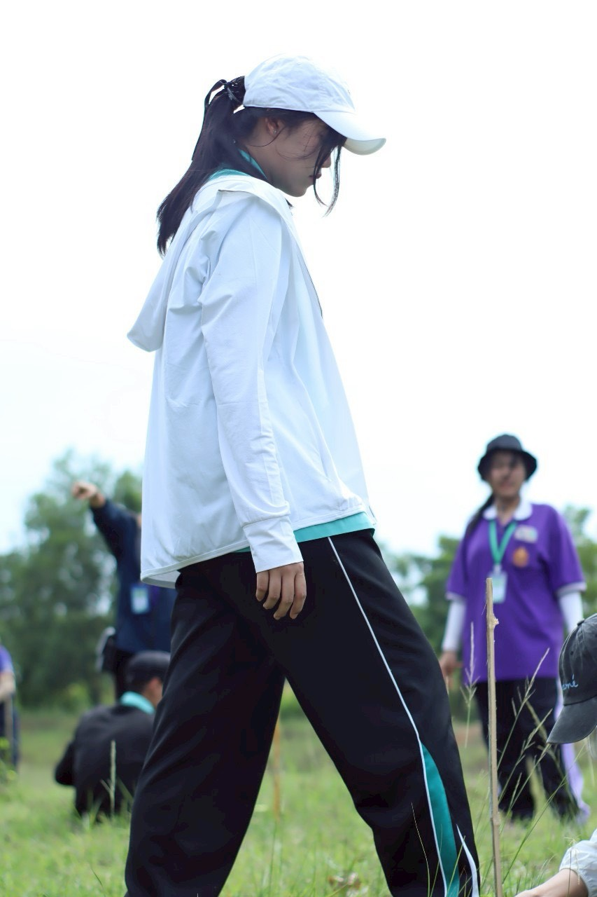

🥇 เหรียญทอง
🥇 เหรียญทอง
งานศิลปหัตถกรรมนักเรียน ครั้งที่ 72
รางวัลระดับเหรียญทอง การประกวดโครงงานอาชีพ ระดับชั้น ม.4 - ม.6 (สพม.ชลบุรี ระยอง)
📷 ภาพบรรยากาศกิจกรรมเพิ่มเติม:
 🥇 เหรียญทอง
🥇 เหรียญทอง
รางวัลระดับเหรียญทอง การประกวดโครงงานอาชีพ ระดับชั้น ม.4 - ม.6 (สพม.ชลบุรี ระยอง)
 🏥 จิตอาสา
🏥 จิตอาสา
ปฏิบัติงานสนับสนุนและอำนวยความสะดวกแก่ผู้ป่วย ณ โรงพยาบาลรามาธิบดี

 🤝 คณะกรรมการ
🤝 คณะกรรมการ
ปฏิบัติหน้าที่ฝ่ายต้อนรับและอำนวยความสะดวกในงานศิลปหัตถกรรมนักเรียน ครั้งที่ 73


 🚑 CPR & AED
🚑 CPR & AED
ผ่านการฝึกอบรมเชิงปฏิบัติการ CPR & AED โดยโรงพยาบาลบ้านบึง

 🌱 จิตอาสา
🌱 จิตอาสา
ร่วมกิจกรรมฟื้นฟูธรรมชาติและสิ่งแวดล้อม ณ จ.ฉะเชิงเทรา กับมูลนิธิวิถีธรรมชลบุรี


 💖 ค่ายคุณธรรม
💖 ค่ายคุณธรรม
เข้าร่วมกิจกรรมส่งเสริมคุณธรรม จริยธรรม และการพัฒนาจิตใจ


 🍎 สุขภาพ
🍎 สุขภาพ
กิจกรรมรณรงค์และตรวจสอบความปลอดภัยด้านผลิตภัณฑ์สุขภาพในโรงเรียน
ดูเกียรติบัตร / ใบ อย. ➔ 🏆 การประกวด
🏆 การประกวด
เข้าร่วมการแข่งขันและส่งเสริมกิจกรรมรณรงค์ต่อต้านสารเสพติดในสถานศึกษา
ดูเกียรติบัตรคำขวัญ/ประกวด ➔